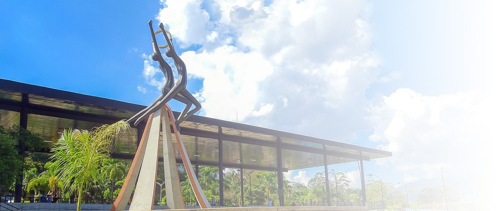

Itagüí es un territorio donde la historia, la creatividad y la alegría se entrelazan para dar vida a una identidad única. Este municipio, reconocido por su dinamismo y calidez humana, es un epicentro cultural que celebra con orgullo sus raíces y proyecta al mundo su esencia vibrante. Caminar por Itagüí es encontrarse con expresiones artísticas en cada rincón: murales que cuentan historias, escenarios que dan voz a talentos locales y festividades que unen a la comunidad. Su gastronomía es un viaje de sabores tradicionales y contemporáneos, donde cada plato refleja la riqueza culinaria antioqueña y el ingenio de su gente. Las fiestas y eventos culturales son el corazón de la ciudad: celebraciones llenas de música, danza y color que contagian de energía a propios y visitantes. Aquí, la cultura no es solo un patrimonio, es una forma de vida que se comparte con orgullo y alegría. Itagüí te invita a vivir su arte, su sabor y su tradición.